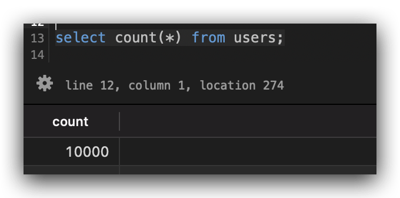
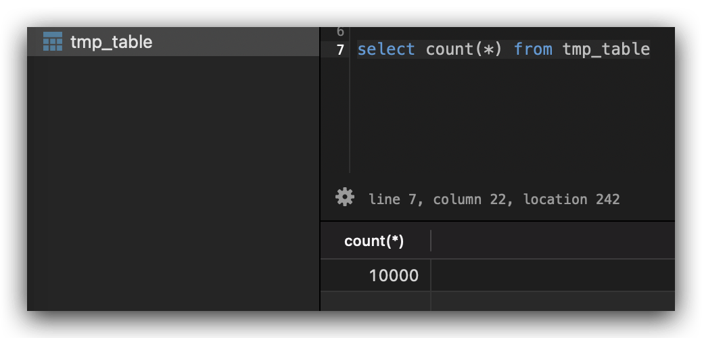
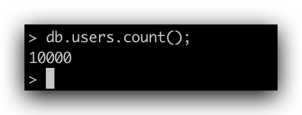

# [SQL] MySQL, PostgreSQL 與 MongoDB 如何大量產生測試資料
# Dummy data, Test data, mongo, mysql, postgresql.
在網頁前端的領域，工程師常常使用 lorem 這種「不具意義」的文字作為排版的測試。
在後端領域，我們時常也需要資料庫中有「大量但並不需要具有真實意義的資料」也就是所謂的 dummy data，供我們的程式能夠進行測試。
網路上有很多可以產生 dummy data 的網站，可以讓人很輕鬆的產生大量的資料供使用者測試跟使用。
但是，其實我們可以直接使用簡單的 SQL 就達成這樣的目的，無需再去網路上找尋這種 dummy data generator.
以下針對 PostgreSQL 、 MySQL 跟 MongoDB 三種比較常見的 Database 提供 dummy data generate 的語法。
# PostgreSQL
我們先 Create 一個空 table 作為講解使用。
-- | |
-- Create a table `users` | |
-- | |
CREATE TABLE users ( | |
id uuid DEFAULT uuid_generate_v4 (), | |
name varchar(50) not null, | |
email VARCHAR NOT NULL, | |
PRIMARY KEY (id) | |
); |
基本思路是，利用 PostgreSQL 內建的 generate_series 指令，產生大量的流水號，再利用流水號的數量塞入 random 的資料進資料庫。
細節的指令可以查看以下的語法：
-- | |
-- random 10,000 data. | |
-- | |
INSERT INTO users (name, email) | |
SELECT md5(random()::text), CONCAT(random()::text, '@xxx.com') | |
FROM generate_series(1, 10000); |
檢查一下是否真的塞入了 10000 筆資料了。

# MySQL
MySQL 沒有像 PostgreSQL 的 generate_series 這樣方便的工具，因此我們要自己寫。
假設我們一樣需要 10,000 筆的資料，基本思路如下：
- 我們先建立一張擁有流水號 1 ~ 10,000 的臨時表，可以使用 in-memory table。
- 基於 select 這個臨時表來 insert dummy data.
那麼問題就簡化到，我們該怎麼建立這樣的臨時表呢？
網路上有幾種方法。第一種是使用 store procedure ；其二就是我今天想介紹的作法：直接使用 python, node 這種小程式 一行創建 。
創建臨時表 table
CREATE TABLE tmp_table (id INT, PRIMARY KEY (id)) ENGINE=MEMORY DEFAULT CHARSET=utf8mb4;
幫臨時表 insert 10000 筆的流水號的文件，作為準備。
Python Version:
python -c 'print("id")
for i in range(1, 1+10000): print(i)' > base.csv
NodeJs Version:
node -e 'console.log("id"); for(let i=1; i<=10000; i++) console.log(i);' > base.csv
從 base.txt 導入數據到剛剛的臨時表
mysql> load data infile '/Your/file/path/base.txt' replace into table tmp_table;
確認一下是否有成功導入

接下來我們就能利用這個流水表，創建隨機資料了。
一樣使用剛剛 Create 資料表的語法創建一個 table 當作目標 table
-- | |
-- Create a table `users` | |
-- | |
CREATE TABLE `users` ( | |
`id` binary(36) primary key, | |
`name` varchar(50) not null, | |
`email` VARCHAR(50) NOT NULL | |
); |
接下來就可以使用 tmp_table 塞入大量的 random data.
-- | |
-- random 10,000 data. | |
-- | |
INSERT INTO users (id, name, email) | |
SELECT uuid(), md5(LEFT(UUID(), 8)), CONCAT(LEFT(UUID(), 8), '@xxx.com') | |
FROM tmp_table; |
# MongoDB
mongodb 要產生 dummy data 很簡單。
我們只需要使用 forloop 即可產生我們想要的數量。
mongo> for (var i = 1; i <= 10000; i++) db.users.insert( { name : UUID(), email: UUID() + "@mail.com" } );
接下來檢查看看，是否真的有 10000 筆資料。

# 結語
最近公司開始往大數據的開發方向靠攏，許許多多的程式開發都希望能夠擁有支持大數據處理的能力。
因此在 local side 如果也能夠建立足夠的數據量，對於 local 的開發會更加單純方便。
本文整理了幾個比較常見資料庫的產生 dummy data 的方式，除了作為紀錄，也希望能夠幫助到有需要的人。
另外小小抱怨一下： MySQL 產生 dummy data 的方式真的是有夠麻煩。
# 參考資料
- MongoDB 快速入門筆記
- MySQL 快速创建千万级测试数据
- How can I generate big data sample for Postgresql using generate_series and random?